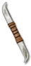

Heyday

Pain Harvester
War Dart
Damage: 6-24
Required Level: 37
+160-200% Enhanced Weapon Damage
+75 Increased Stack Size
+50% Bonus to Attack Rating
+20 to Dexterity
+20 to Strength
+2 to Barbarian Skill Levels
+1 Cannot Be Frozen
Replenishes Quantity
Unique Throwing Knife
Pain Harvester
- Type
- Throwing Knife
- Base
- War Dart
- Tier
- Exceptional
- Required level
- 37
- Item level
- 24
- Required strength
- 25
- Required dexterity
- 97
- Max sockets
- 2